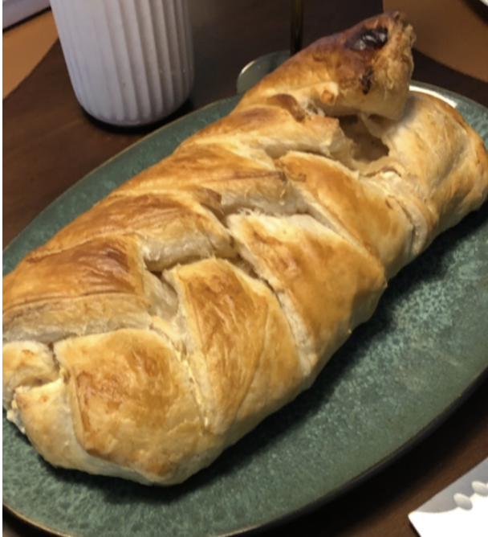

Skinkestang

Ingredienser
- 1 pk butterdejsplader
- 1 pk skinkestrimler
- 1-2 pk pikantost
- 1 ds champignon
- 2 tsk. sennep
- Salt/peber
- (Mælk til pensling)
Trin for Trin
- Bland alle ingredienser i en skål undtagen butterdejspladerne.
- Læg butterdejspladerne på en bageplade med bagepapir.
- Fordel fyldet ligeligt tværs ned i midten af pladerne.
- Skær nogle skrå streger i hver side af butterdejen og læg skiftevis en sektion ind fra hver side.
- Bag i ovnen i ca. 30 min eller efter anvisning på butterdejen.